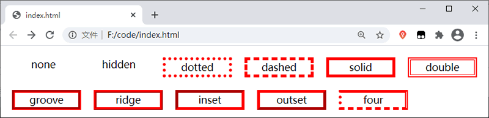
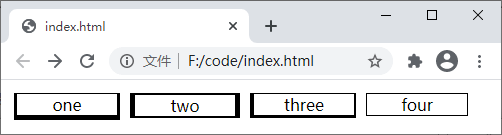
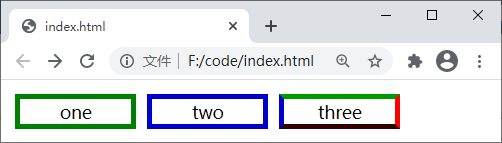
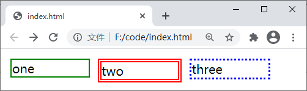
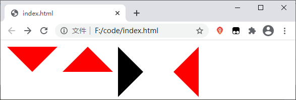

CSS边框样式（border）
CSS 中的边框是围绕着元素内容和内边距的一条或多条线段，您可以自定义这些线段的样式、宽度以及颜色。您可以通过下面几个属性分别定义边框的样式、宽度和颜色：
border-style 属性有多种不同的用法：
除了可以使用 border-style 属性设置元素的边框样式外，您还可以使用下面的属性分别设置元素上、下、左、右四个边框的样式：
【示例】使用 border-style 属性为元素设置边框：
thin、medium、thick 三个关键字并没有固定的值，它们的值取决于浏览器，例如在 Chrome 浏览器中三个关键字的值分别为 1px、3px、5px。
同 border-style 属性相同，border-width 属性同样支持多种不同的用法：
除了可以使用 border-width 属性设置元素的边框宽度外，您还可以使用下面的属性分别设置元素上、下、左、右四个边框的宽度：
【示例】使用 border-width 设置边框的宽度：
同 border-style 属性相同，border-color 属性同样支持多种不同的用法：
除了可以使用 border-color 属性设置元素的边框颜色外，您还可以使用下面的属性分别设置元素上、下、左、右四个边框的颜色：
【示例】使用 border-color 设置边框的颜色：
【示例】使用 border 属性为元素设置边框：
通过组合本节中介绍这些属性，可以实现一些意想不到的效果，例如我们可以通过边框来绘制三角形，示例代码如下：
- border-style：设置边框的样式，例如实线、虚线等；
- border-width：设置边框的宽度（厚度）；
- border-color：设置边框的颜色；
- border：上面三个边框属性的缩写。
1. border-style
border-style 属性用来设置元素中所有边框的样式，或者单独为某个边框设置样式，其语法格式如下：border-style: border-top-style border-right-style border-bottom-style border-left-style;
border-style 属性的可选值如下：| 值 | 描述 |
|---|---|
| none | 无边框 |
| hidden | 隐藏边框，与 "none" 类似 |
| dotted | 定义点状虚线边框 |
| dashed | 定义虚线边框 |
| solid | 定义实线边框 |
| double | 定义双实线边框，双实线边框的宽度等于 border-width 的值 |
| groove | 定义 3D 凹槽边框，其效果取决于 border-color 的值 |
| ridge | 定义 3D 垄状边框，其效果取决于 border-color 的值 |
| inset | 定义 3D 嵌入边框，其效果取决于 border-color 的值 |
| outset | 定义 3D 突出边框，其效果取决于 border-color 的值 |
| inherit | 从父元素继承边框样式 |
border-style 属性有多种不同的用法：
- 如果提供全部的四个参数，则会按照上、右、下、左的顺序分别设置边框四个边的样式；
- 如果提供三个参数，那么第一个参数会作用在上边框，第二个参数会作用在左、右两个边框上，第三个参数会作用在下边框上；
- 如果提供两个参数，那么第一个参数会作用在上、下两个边框上，第二个参数会作用在左、右两个边框上；
- 如果只提供一个参数，这个参数将同时作用在四个边框上。
除了可以使用 border-style 属性设置元素的边框样式外，您还可以使用下面的属性分别设置元素上、下、左、右四个边框的样式：
- border-bottom-style：设置下边框的样式；
- border-top-style：设置上边框的样式；
- border-left-style：设置左边框的样式；
- border-right-style：设置右边框的样式。
【示例】使用 border-style 属性为元素设置边框：
<!DOCTYPE html>
<html>
<head>
<style>
p {
width: 100px;
float: left;
margin: 10px;
border-width: 5px;
border-color: red;
text-align: center;
}
.none {
border-style: none;
}
.hidden {
border-style: hidden;
}
.dotted {
border-style: dotted;
}
.dashed {
border-style: dashed;
}
.solid {
border-style: solid;
}
.double {
border-style: double;
}
.groove {
border-style: groove;
}
.ridge {
border-style: ridge;
}
.inset {
border-style: inset;
}
.outset {
border-style: outset;
}
.four {
border-top-style: solid;
border-right-style: double;
border-bottom-style: dashed;
border-left-style: dotted;
}
</style>
</head>
<body>
<p class="none">none</p>
<p class="hidden">hidden</p>
<p class="dotted">dotted</p>
<p class="dashed">dashed</p>
<p class="solid">solid</p>
<p class="double">double</p>
<p class="groove">groove</p>
<p class="ridge">ridge</p>
<p class="inset">inset</p>
<p class="outset">outset</p>
<p class="four">four</p>
</body>
</html>
运行结果如下图所示：

图：border-style 属性演示
图：border-style 属性演示
2. border-width
border-width 属性用来设置元素中所有边框的宽度，或者单独为某个边框设置宽度，其语法格式如下：border-width: border-top-width border-right-width border-bottom-width border-left-width;
border-width 属性的可选值如下：| 值 | 描述 |
|---|---|
| thin | 定义较细的边框 |
| medium | 默认值，定义中等宽度的边框 |
| thick | 定义较粗的边框 |
| length | 使用数值加单位的形式设置具体的边框宽度，例如 2px |
| inherit | 从父元素继承边框的宽度 |
thin、medium、thick 三个关键字并没有固定的值，它们的值取决于浏览器，例如在 Chrome 浏览器中三个关键字的值分别为 1px、3px、5px。
同 border-style 属性相同，border-width 属性同样支持多种不同的用法：
- 如果提供全部的四个参数，则会按照上、右、下、左的顺序分别设置边框四个边的宽度；
- 如果提供三个参数，那么第一个参数会作用在上边框，第二个参数会作用在左、右两个边框上，第三个参数会作用在下边框上；
- 如果提供两个参数，那么第一个参数会作用在上、下两个边框上，第二个参数会作用在左、右两个边框上；
- 如果只提供一个参数，这个参数将同时作用在四个边框上。
除了可以使用 border-width 属性设置元素的边框宽度外，您还可以使用下面的属性分别设置元素上、下、左、右四个边框的宽度：
- border-bottom-width：设置下边框的宽度；
- border-top-width：设置上边框的宽度；
- border-left-width：设置左边框的宽度；
- border-right-width：设置右边框的宽度。
【示例】使用 border-width 设置边框的宽度：
<!DOCTYPE html>
<html>
<head>
<style>
p {
width: 100px;
margin: 5px;
float: left;
border-style: solid;
text-align: center;
}
.one{
border-width: thin medium thick;
}
.two{
border-width: 2px 5px;
}
.three{
border-top-width: 1px;
border-right-width: 2px;
border-bottom-width: 3px;
border-left-width: 4px;
}
.four{
border-width: thin;
}
</style>
</head>
<body>
<p class="one">one</p>
<p class="two">two</p>
<p class="three">three</p>
<p class="four">four</p>
</body>
</html>
运行结果如下图所示：

图：border-width 属性演示
图：border-width 属性演示
3. border-color
border-color 属性用来设置元素中所有边框的颜色，或者单独为某个边框设置颜色，其语法格式如下：border-color: border-top-color border-right-color border-bottom-color border-left-color;
border-color 属性的可选值如下：| 值 | 描述 |
|---|---|
| color_name | 使用颜色名称来设置边框的颜色，例如 red |
| hex_number | 使用颜色的十六进制值来设置边框的颜色，例如 #ff0000 |
| rgb_number | 使用 rgb() 函数设置边框的颜色，例如 rgb(255,0,0) |
| transparent | 默认值，设置边框颜色为透明 |
| inherit | 从父元素继承边框的颜色 |
同 border-style 属性相同，border-color 属性同样支持多种不同的用法：
- 如果提供全部的四个参数，则会按照上、右、下、左的顺序分别设置边框四个边的颜色；
- 如果提供三个参数，那么第一个参数会作用在上边框，第二个参数会作用在左、右两个边框上，第三个参数会作用在下边框上；
- 如果提供两个参数，那么第一个参数会作用在上、下两个边框上，第二个参数会作用在左、右两个边框上；
- 如果只提供一个参数，这个参数将同时作用在四个边框上。
除了可以使用 border-color 属性设置元素的边框颜色外，您还可以使用下面的属性分别设置元素上、下、左、右四个边框的颜色：
- border-bottom-color：设置下边框的颜色；
- border-top-color：设置上边框的颜色；
- border-left-color：设置左边框的颜色；
- border-right-color：设置右边框的颜色。
【示例】使用 border-color 设置边框的颜色：
<!DOCTYPE html>
<html>
<head>
<style>
p {
width: 100px;
margin: 5px;
float: left;
border-style: solid;
border-width: 5px;
text-align: center;
}
.one{
border-color: green;
}
.two{
border-color: #0000CC;
}
.three{
border-top-color: #009900; /*绿色*/
border-right-color: #FF0000; /*红色*/
border-bottom-color: #330000; /*黑色*/
border-left-color: #0000CC; /*蓝色*/
}
</style>
</head>
<body>
<p class="one">one</p>
<p class="two">two</p>
<p class="three">three</p>
</body>
</html>
运行结果如下图所示：

图：border-color 属性演示
图：border-color 属性演示
4. border
border 属性是上面介绍的 border-width、border-style、border-color 三种属性的简写，使用 border 属性可以同时定义上述三个属性，语法格式如下：border: border-width border-style border-color;
其中 border-width 用来设置边框的宽度；border-style 用来设置边框的样式；border-color 用来设置边框的颜色。【示例】使用 border 属性为元素设置边框：
<!DOCTYPE html>
<html>
<head>
<style>
p{
width: 100px;
float: left;
margin: 5px;
}
.one {
border: 2px solid green;
}
.two {
border: 5px double red;
}
.three {
border: 3px dotted blue;
}
</style>
</head>
<body>
<p class="one">one</p>
<p class="two">two</p>
<p class="three">three</p>
</body>
</html>
运行结果如下图所示：

图：border 属性演示
图：border 属性演示
提示：border 属性的三个参数（border-width、border-style、border-color）并不需要遵守固定的顺序，将它们的顺序打乱也是可以的。另外，也可以省略其中的某个参数，例如 border: soild red;，省略的参数将被设置为该参数的默认值。
- border-bottom：统一设置下边框的宽度、样式、颜色；
- border-top：统一设置上边框的宽度、样式、颜色；
- border-left：统一设置左边框的宽度、样式、颜色；
- border-right：统一设置右边框的宽度、样式、颜色。
通过组合本节中介绍这些属性，可以实现一些意想不到的效果，例如我们可以通过边框来绘制三角形，示例代码如下：
<!DOCTYPE html>
<html>
<head>
<style>
p {
width: 0px;
margin: 5px;
float: left;
}
.top {
border: 50px solid;
border-color: red transparent transparent;
}
.bottom {
border-width: 0 50px 50px;
border-style: solid;
border-color: transparent transparent red;
}
.left {
border-top: 50px solid transparent;
border-left: 50px solid black;
border-right: 50px solid transparent;
border-bottom: 50px solid transparent;
}
.right {
border-width: 50px 50px 50px 0px;
border-style: solid;
border-color: transparent red transparent transparent;
}
</style>
</head>
<body>
<p class="top"></p>
<p class="bottom"></p>
<p class="left"></p>
<p class="right"></p>
</body>
</html>
运行结果如下图所示：

图：使用边框绘制三角形
图：使用边框绘制三角形
关注公众号「站长严长生」，在手机上阅读所有教程，随时随地都能学习。内含一款搜索神器，免费下载全网书籍和视频。

微信扫码关注公众号